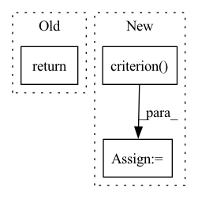

Pattern ID :22268
Before Change
if use_cache:
return logits, cached_kvs
else:
return logits
class BloomForCausalLM(BloomPreTrainedModel):After Change
else:
encoder_outputs = outputs
logits = parallel_matmul(encoder_outputs[0], self.bloom.word_embeddings.weight)
loss = self.criterion( logits, labels, loss_mask)
return loss
class BloomForCausalLM(BloomPreTrainedModel):In pattern: SUPERPATTERN
Frequency: 4
Non-data size: 3
Instances Fragment ID: 70234696
Project Name: paddlepaddle/paddlenlp
Commit Name: 96b76a3c1c07dd44bd856dfad5b77cac01d1113b
Time: 2023-03-14
Author: fangzeyang0904@hotmail.com
File Name: examples/language_model/bloom/modeling.py
M Class Name: BloomForPretraining
N Class Name: BloomForPretraining
M Method Name: forward(9)
N Method Name: forward(7)
M Parent Class: BloomPreTrainedModel
N Parent Class: BloomPreTrainedModel
M File Name: examples/language_model/bloom/modeling.py
N File Name: examples/language_model/bloom/modeling.py
M Start Line: 1005
M End Line: 1012
N Start Line: 999
N End Line: 1015
Before Change
total += labels.size(0)
correct += (predicted == labels).sum().item()
test_acc = 100.0 * correct / total
return test_acc
def save_best_params(self, test_acc: float, epoch: int) -> None:
Save the model if the accuracy is better.After Change
for data in progressbar(self.testloader):
images, labels = data[0].to(self.device), data[1].to(self.device)
outputs = self.model(images)
loss = self.criterion( outputs, labels)
losses.append(loss.item())
// compute accuracy
_, predicted = torch.max(outputs.data, 1) Fragment ID: 70234695
Project Name: j-marple-dev/model_compression
Commit Name: dc128cf079dc03b76c92e38ff2700d0984bcb70d
Time: 2020-06-15
Author: 44793742+HSShin0@users.noreply.github.com
File Name: src/train.py
M Class Name: Trainer
N Class Name: Trainer
M Method Name: test_one_epoch(1)
N Method Name: test_one_epoch(1)
M Parent Class:
N Parent Class:
M File Name: src/train.py
N File Name: src/train.py
M Start Line: 150
M End Line: 151
N Start Line: 164
N End Line: 179
Before Change
self.prunner.reset()
self.record()
self.prunner.normalize_ranks_per_layer()
return self.prunner.get_prunning_plan(num_filters_to_prune)
def replace_layers(self, model, i, indexes, layers):After Change
x = _input.detach()
x.requires_grad_()
output = self.prunner.forward(_input)
loss = self.model.criterion( output, _label)
loss.backward()
x.requires_grad = False
return self.get_prunning_plan() Fragment ID: 70234693
Project Name: ain-soph/trojanzoo
Commit Name: 2c7f3682ae92a833ce2f3432fa643322eb2bbae5
Time: 2020-09-06
Author: ain-soph@live.com
File Name: trojanzoo/defense/backdoor/fine_pruning.py
M Class Name: Fine_Pruning
N Class Name: Fine_Pruning
M Method Name: get_candidates_to_prune(1)
N Method Name: get_candidates_to_prune(2)
M Parent Class: Defense_Backdoor
N Parent Class: Defense_Backdoor
M File Name: trojanzoo/defense/backdoor/fine_pruning.py
N File Name: trojanzoo/defense/backdoor/fine_pruning.py
M Start Line: 231
M End Line: 238
N Start Line: 141
N End Line: 150
Before Change
loss = self.criterion(logits, target)
top1, top5 = accuracy(logits, target, topk=(1, 5))
return {"loss": loss, "top1_accuracy": top1, "top5_accuracy": top5}
After Change
input, target = batch
logits, _ = model(input)
ema_loss = self.criterion( logits, target)
ema_top1, ema_top5 = accuracy(logits, target, topk=(1, 5))
model.restore_latest()
Fragment ID: 70234691
Project Name: determined-ai/determined
Commit Name: 2574f9000e6487c403772f34acf8f29c437de46c
Time: 2020-08-04
Author: liam@determined.ai
File Name: examples/experimental/trial/imagenet_nas_arch_pytorch/model_def.py
M Class Name: ImageNetTrial
N Class Name: ImageNetTrial
M Method Name: evaluate_batch(2)
N Method Name: evaluate_batch(2)
M Parent Class: PyTorchTrial
N Parent Class: PyTorchTrial
M File Name: examples/experimental/trial/imagenet_nas_arch_pytorch/model_def.py
N File Name: examples/experimental/trial/imagenet_nas_arch_pytorch/model_def.py
M Start Line: 198
M End Line: 201
N Start Line: 289
N End Line: 302